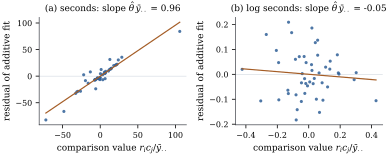

16.1 Two-way additive models
Two factors are observed together. Factor
16.1.1. Averaging and centring matrices
Stack the observations with the replicate index
Let
(a)
(b) If each
(c) If each
(d) The
Proof.
- (a)
The rank
import itertools
import numpy as np
def Jbar(k):
return np.full((k, k), 1.0 / k) # averaging: replaces a k-vector by its mean
def Cen(k):
return np.eye(k) - Jbar(k) # centring: subtracts the mean
def kron_all(mats):
out = np.ones((1, 1))
for A in mats:
out = np.kron(out, A)
return out
def factorial_projections(levels, m):
"""P_S for every subset S of the factors (a 0/1 tuple), and the error projection."""
P = {}
for S in itertools.product([0, 1], repeat=len(levels)):
P[S] = kron_all([Cen(l) if s else Jbar(l) for l, s in zip(levels, S)] + [Jbar(m)])
P["error"] = kron_all([np.eye(l) for l in levels] + [Cen(m)])
return P
def rank(A):
return int(round(np.trace(A))) # rank = trace for a projection16.1.2. The additive model
The additive two-way model is
with model matrix
and
16.1.3. Additivity with one observation per cell
Many two-factor data sets have one observation per
cell, such as methods each run once on several test
problems. By Example (Additive two-factor model, one observation per cell)
the residual space of the additive model then has
dimension
A test is still possible against a specific
kind of departure. Suppose the cell means are additive
on some other scale,
Tukey (1949) proposed to look for interaction of
exactly this shape. The row and column effects are
estimated by
The regressor is computed from the same data, so Proposition 14.7.1
does not apply. But a regressor that is a function of
the fitted values alone leaves the
16.1.4. Estimation and tests
The following theorem collects what the additive model delivers in a balanced layout, with and without replication.
Assume Eq. 16.1.1 with
(a)
(b)
(c) Under normal errors,
(d) If
(e) If
(f) (Tukey’s test.) If
Proof.
(a) By Lemma 16.1.1(c) the three projections
(b) The design is complete, hence connected, and the estimability condition is Exercise (C1) with a single component. For the estimator,
(c) The spaces
(d) By Lemma 16.1.1(d) with
(e) With
(f) Write
Part (b) is the practical content of balance: rows are compared exactly as if the columns did not exist. The columns still matter, because they remove their own variation from the error.
The listing builds the five projections of part (d)
for
a, b, m = 3, 4, 2
P = factorial_projections([a, b], m)
names = {(0, 0): "mean", (1, 0): "A", (0, 1): "B", (1, 1): "AB", "error": "error"}
for key, name in names.items():
print(f"{name:6s} rank {rank(P[key])}")
keys = list(names)
worst = max(np.abs(P[s] @ P[t]).max() for s, t in itertools.combinations(keys, 2))
print("largest entry of any product P_s P_t, s != t:", f"{worst:.1e}")
print("sum is the identity:", np.allclose(sum(P[k] for k in keys), np.eye(a * b * m)))16.1.5. Tukey’s test in practice
Tukey’s test (Theorem 16.1.2(f))
is exact against every additive model, whatever the
values of
with
Six solvers were each run once on eight benchmark
problems, and the running time was recorded in seconds.
The data are synthetic, generated by the script
tukey_runtime.py so that the logarithm of
time is additive in solver and problem, with a little
noise:
| P1 | P2 | P3 | P4 | P5 | P6 | P7 | P8 | |
|---|---|---|---|---|---|---|---|---|
| S1 | 1.7 | 3.4 | 5.6 | 14.1 | 28.1 | 50.2 | 82.9 | 249.4 |
| S2 | 2.1 | 5.7 | 9.0 | 14.7 | 36.9 | 76.0 | 116.7 | 292.0 |
| S3 | 1.3 | 3.1 | 5.1 | 10.5 | 18.8 | 37.6 | 82.2 | 148.3 |
| S4 | 3.3 | 9.1 | 12.7 | 19.1 | 52.8 | 110.0 | 183.1 | 371.8 |
| S5 | 2.0 | 4.7 | 7.2 | 13.5 | 31.4 | 65.2 | 111.1 | 289.3 |
| S6 | 1.5 | 3.4 | 5.4 | 10.4 | 26.0 | 43.2 | 106.3 | 172.0 |
The additive model in seconds leaves a residual sum
of squares of
The scale changes the conclusion about the solvers.
In seconds,

import numpy as np
from scipy import stats
gen_rng = np.random.default_rng(16_01)
a, b = 6, 8
solver_log = np.array([0.0, 0.25, -0.35, 0.55, 0.1, -0.2]) # log speed factors
problem_log = np.log([2.0, 4.5, 7.0, 12.0, 25.0, 60.0, 110.0, 240.0]) # typical seconds
noise = gen_rng.normal(scale=0.12, size=(a, b))
times = np.round(np.exp(solver_log[:, None] + problem_log[None, :] + noise), 1)
def additive_fit(Y):
"""Row effects, column effects and residuals of the additive fit to an a x b table."""
g = Y.mean()
r = Y.mean(axis=1) - g # ybar_i. - ybar..
c = Y.mean(axis=0) - g # ybar_.j - ybar..
resid = Y - g - r[:, None] - c[None, :]
return g, r, c, resid
def tukey_test(Y):
"""Tukey's one-degree-of-freedom test for nonadditivity in an a x b table."""
a, b = Y.shape
g, r, c, resid = additive_fit(Y)
u = np.outer(r, c) # lies in the interaction space
ss_n = (u * Y).sum() ** 2 / (u * u).sum()
sse = (resid ** 2).sum()
df = (a - 1) * (b - 1) - 1
F = ss_n / ((sse - ss_n) / df)
theta = (u * Y).sum() / (u * u).sum() # coefficient of a_i b_j
return F, stats.f.sf(F, 1, df), theta, g, sse, ss_n
for label, Y in [("seconds", times), ("log seconds", np.log(times))]:
F, p, theta, g, sse, ss_n = tukey_test(Y)
print(f"{label:12s} F = {F:9.2f} p = {p:.2g} theta = {theta:.4f}"
f" suggested power 1 - theta*ybar = {1 - theta * g:.2f}")The listing below checks Theorem 16.1.2(f)
by simulation. It draws
rng = np.random.default_rng(20260919)
reps = 20_000
Fs = np.empty(reps)
for t in range(reps):
Y = 3.0 + np.arange(a)[:, None] * 0.5 + np.arange(b)[None, :] + rng.normal(size=(a, b))
Fs[t] = tukey_test(Y)[0]
size = np.mean(Fs > stats.f.ppf(0.95, 1, (a - 1) * (b - 1) - 1))
ks = stats.kstest(Fs, stats.f(1, (a - 1) * (b - 1) - 1).cdf)
print(f"simulated size of the 5% test: {size:.4f} Kolmogorov-Smirnov p-value: {ks.pvalue:.2f}")Warning. A nonsignificant Tukey
test does not establish additivity. It rules out only
interaction of the form
16.1.6. Exercises
A. Check your understanding
For
In the additive model with
B. Practice
In the additive model, suppose
Solution. Here exercise_checks.py). The
noncentrality doubles, and the error degrees of freedom
more than double because the
Show that Tukey’s statistic
Suppose
Solution.
With
Solution. The interaction terms
C. Going deeper
Extend Tukey’s test to